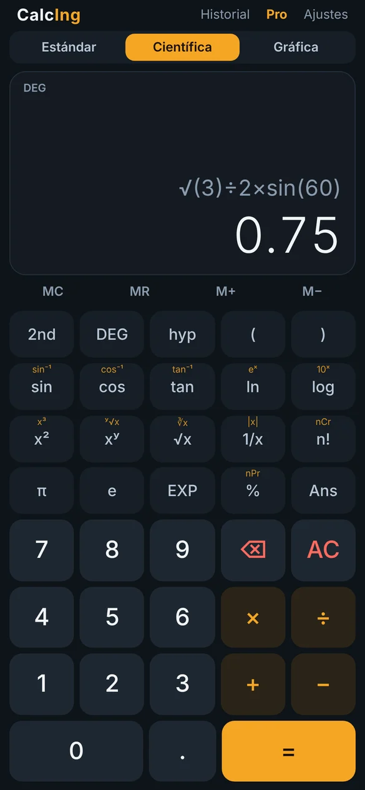
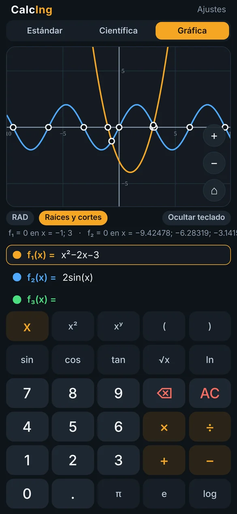

Tres calculadoras en una sola app
Estándar para el día a día, científica para la universidad y el trabajo, y gráfica para ver las funciones, sus raíces y dónde se cruzan. Hecha por un ingeniero civil, pensada para estudiantes y profesionales.


Lo que hace
Resultados con 12 cifras significativas, valores exactos en ángulos notables y los paréntesis que falten se cierran solos.
Estándar
Teclas grandes para sumar, restar, multiplicar, dividir y sacar porcentajes sin distracciones.
Científica
sin, cos, tan y sus inversas en grados, radianes y gradianes; hiperbólicas, logaritmos, potencias, raíces, factorial, nCr, nPr y notación científica.
Gráfica
Escriba f(x) y la curva aparece al instante. Arrastre para mover, pellizque para acercar y toque para ver el valor en cualquier punto.
Raíces y cortes
Marca dónde cada curva corta el eje x y dónde se cruzan entre ellas, con sus coordenadas.
ProHistorial y memoria
Cada resultado queda en el historial para reutilizarlo; memoria M+, M−, MR y la tecla Ans como en una calculadora de bolsillo.
Para ingeniería
Conversor de unidades, ecuaciones y sistemas, estadística y grados-minutos-segundos para topografía.
Así se ve
Capturas de la app en un celular de 6,1 pulgadas.
Gratis o Pro
La versión gratis trae todo lo necesario para el día a día. Pro quita los anuncios y suma lo que más se usa en ingeniería.
Gratis
- Calculadora estándar y científica completas
- Gráfica de una función
- Historial de 20 cálculos
- Con un banner de anuncios
CalcIng Pro
- Sin anuncios
- Gráfica de tres funciones a la vez
- Raíces e intersecciones con coordenadas
- Historial de 100 cálculos
- Las funciones nuevas, sin pagar otra vez
Se activa dentro de la app: Pro → pague por PayPal → envíe el comprobante con el código de su celular → reciba el código de activación por correo.
Instalación
Toma menos de un minuto.
Teléfono o tablet Android
- Toque Descargar para Android en esta página.
- Abra el archivo
CalcIng.apkdesde las notificaciones o la carpeta Descargas. - Si Android lo pide, permita instalar apps de esta fuente y toque Instalar. Si aparece Play Protect, elija Instalar de todos modos.
Cómo usarla
- Elija el modo arriba: Estándar, Científica o Gráfica.
- En científica, 2nd cambia a las funciones inversas y DEG la unidad de ángulo.
- Mantenga presionado el resultado para copiarlo.
- En gráfica, escriba con la tecla x y toque la curva para ver valores.
Preguntas frecuentes
¿Es gratis?
Sí. La app se descarga y se usa sin costo, con un banner de anuncios. Pro es opcional.
¿Necesita internet?
No para calcular. El internet solo se usa para mostrar el anuncio en la versión gratis.
¿Por qué 1÷2π da 0.159?
Porque la multiplicación sin signo va antes que × y ÷, como en las calculadoras Casio: 1÷2π = 1/(2π). Si quiere (1÷2)×π, escríbalo con el signo ×.
¿Las gráficas usan grados o radianes?
Radianes por defecto, como en cálculo. Se cambia con el botón RAD/DEG de la pantalla de gráficas.
¿Cómo activo Pro?
Dentro de la app toque Pro, pague USD 2,99 por PayPal y envíe el comprobante con el código de su celular a jluismp2023@gmail.com. Recibirá un código de activación que funciona en ese celular.
¿Si actualizo la app pierdo Pro o mi historial?
No. Cada versión nueva se instala encima de la anterior y conserva el historial, las funciones y la activación.
¿Es seguro instalar el APK?
El APK se compila desde el código del proyecto en GitHub y se publica en esta página. Android pide permiso porque no viene de Play Store.
¿Dónde quedan mis datos?
Solo en su teléfono. Vea la política de privacidad.